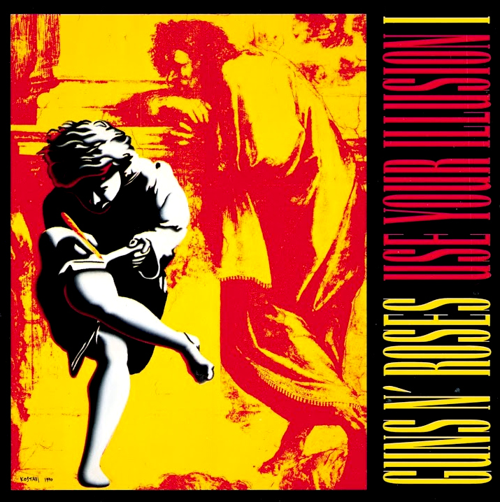
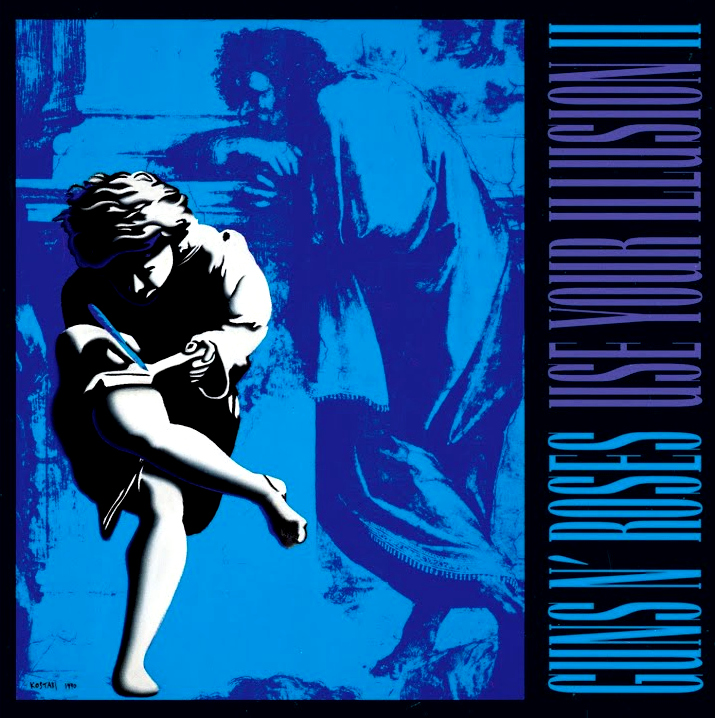

08 · Contemporaneidade Renascentista
De Rafael
aos Guns N' Roses
A arte verdadeira não envelhece — ela se transforma. Em 1991, o designer norte-americano Mark Kostabi buscou inspiração em Rafael Sanzio para criar as capas dos dois álbuns mais vendidos do Guns N' Roses: Use Your Illusion I e Use Your Illusion II.
Kostabi recortou dois personagens do canto direito do afresco — figuras em movimento e tensão dramática — e os recodificou em cores chapadas e agressivas. O resultado: uma obra do século XVI ressurgiu no auge do rock mundial, vendendo mais de 35 milhões de cópias.
O detalhe original · Rafael Sanzio · 1509–1511


Volume I
Use Your Illusion I
Guns N' Roses · 1991

Volume II
Use Your Illusion II
Guns N' Roses · 1991
Designer
Mark Kostabi
Lançamento
Setembro de 1991
Cópias vendidas
+35 milhões
Intervalo
481 anos de distância
Kostabi manteve o gesto — a tensão dos corpos, o dinamismo da cena — e apenas trocou a paleta: sépia e mármore por vermelho e amarelo saturados no Vol. I; azul e roxo eléctrico no Vol. II. A figura renascentista tornou-se ícone pop sem perder sua origem. Rafael, inadvertidamente, vendeu 35 milhões de discos.